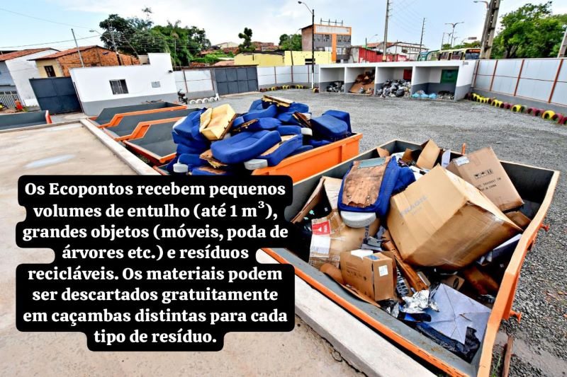

Tipos de Resíduos Aceitos no Ecoponto
Ecoponto é o local adequado para o descarte correto de entulho e outros materiais. Pequenos volumes de entulho e móveis velhos não precisam ser deixados nas ruas, evitando multas e contribuindo para um ambiente mais limpo.
Confira o que é permitido levar aos ecopontos e os endereços dos pontos de entrega voluntária mantidos pela Prefeitura. Fez uma pequena obra em casa e não sabe o que fazer com o entulho que sobrou da reforma? Muitas vezes não é necessário contratar uma caçamba.
Para combater o descarte irregular de lixo (que é crime ambiental!), a Prefeitura de São Paulo, por meio da Secretaria Municipal das Subprefeituras (SMSUB), disponibiliza áreas para a deposição regular dos resíduos de construção e demolição de pequenos geradores (até 1m³), além de facilitar e incentivar a reciclagem desses materiais.
Funcionamento e Materiais
Os Ecopontos são locais de entrega voluntária de:
- Pequenos volumes de entulho (até 1 m³, equivalente a uma caixa d'água de mil litros)
- Grandes objetos (móveis como sofás, armários, colchões; podas de árvores)
- Resíduos recicláveis (papel, plástico, vidro, metal)
- Pedaços de madeira
- Eletrodomésticos quebrados
Nos Ecopontos, o munícipe pode dispor o material gratuitamente em caçambas distintas para cada tipo de resíduo, garantindo a destinação correta. A Prefeitura de São Paulo busca continuamente aumentar o número de unidades disponíveis.
Horário de Funcionamento e Contato
Todos os ecopontos funcionam de segunda a sábado, das 6h às 22h, e aos domingos e feriados, das 6h às 18h.
Mais informações podem ser obtidas pela Central de Atendimento 156.
Este conteúdo foi adaptado do site da prefeitura de São Paulo, disponível em capital.sp.gov.br. Todos os créditos pertencem à fonte original.
